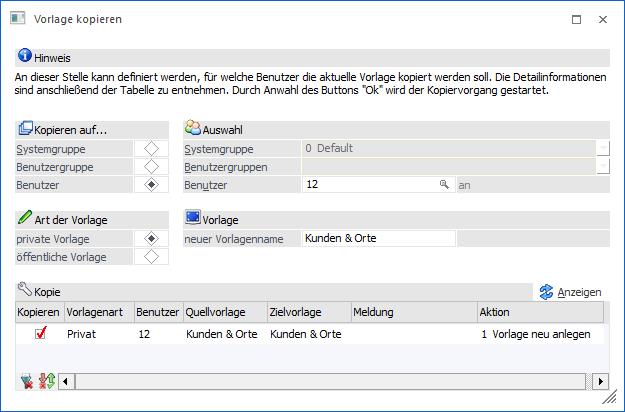
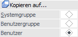
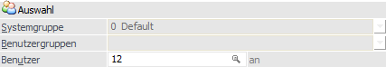
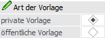
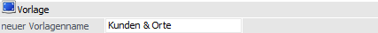
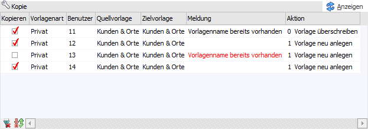

Mit Hilfe des Tabellenbuttons "Vorlage kopieren" (Tabelle "Vorlagen") " kann die ausgewählte Vorlage auf andere Benutzer kopiert werden.

Folgende Einstellungen stehen zur Verfügung:
Kopieren auf…

Ø Systemgruppe / Benutzergruppe / Benutzer
An dieser Stelle wird zunächst angegeben, auf welches Ziel die Vorlage kopiert werden soll.
ü Systemgruppe
Die Vorlage wird
auf alle Benutzer der Systemgruppe kopiert.
ü Benutzergruppe
Die Vorlage wird
auf alle Benurtzer der gewählten Benutzergruppe(n) kopiert.
ü Benutzer
Die Vorlage wird auf
einen bestimmten Benutzer kopiert.
Hinweis
Existiert bei dem Ziel bereits eine Vorlage mit dem angegebenden Namen (siehe Feld "neuer Vorlagenname"), so wird hierauf in der Tabelle "Kopie" hingewiesen.
Des Weiteren stehen sämtliche Einstellungen des Bereichs "Kopieren auf…" nur Volladministratoren oder Benutzern mit dem Teiladministrationsrecht "Datenadministration" zur Verfügung. Normale Benutzer können Vorlagen nur für sich selber kopieren.
Auswahl

Ø Systemgruppe / Benutzergruppen / Benutzer
Abhängig von der Auswahl "Kopieren auf…" wird an dieser Stelle das Ziel angegeben.
Art der Vorlage

Ø private Vorlage / öffentliche Vorlage
Hier kann definiert werden, ob die Kopie eine private Vorlage oder eine öffentliche Vorlage werden soll.
Hinweis
Soll es sich in der weiteren Folge um eine öffentliche Vorlage handeln, so wird als "Ziel" (Bereich "Kopieren auf…") automatisch der aktuelle Benutzer hinterlegt.
Vorlage

Ø neuer Vorlagenname
Mit Hilfe dieses Eingabefelds kann der Name der neuen Vorlage angegeben werden, wobei diese Eingabe als Vorbelegung für die Tabelle "Kopie" dient.
Handelt es sich um eine öffentliche Vorlage, so wird neben dem neuen Vorlagennamen der Name des Benutzers der Veröffentlichung in "{ }" angezeigt.
Tabelle "Kopie"

Nach Anwahl des Buttons "Anzeigen" werden in die Tabelle alle Benutzer (gemäß Selektion) eingetragen. Hierbei finden automatisch diverse Prüfungen statt, welche den Inhalt der Spalten "Kopieren", "Meldung" und "Aktion" beeinflussen.
Ø Kopieren
Mit Hilfe der Checkbox in der Spalte "Kopieren" kann definiert werden, für welche Benutzer die Vorlage kopiert werden soll.
Hinweis
Wenn in der Spalte "Meldung" ein Fehler angezeigt wird (rote Schrift), so ist eine Aktivierung der Checkbox nicht möglich.
Ø Vorlagenart
In dieser Spalte wird angezeigt, welche Art die kopierte Vorlage haben wird.
Ø Benutzer
An dieser Stelle wird die Benutzernummern des Zielbenutzers angezeigt.
Ø Benutzername [optional]
Hier wird der Loginname des Benutzers angezeigt, für welchen die Vorlage kopiert werden soll.
Ø Quellvorlage
In dieser Spalte wird der Namen der Kopiervorlage angezeigt.
Ø Zielvorlage
An dieser Stelle wird der Name der Zielvorlage angezeigt. Handelt es sich um eine Neuanlage, so kann der Name editiert werden.
Ø Meldung
In dieser Spalte werden Hinweise (schwarze Schrift) und Fehler (rote Schrift) ausgegeben.
ü Vorlagenname bereit vorhanden
(Fehler)
Es soll eine Neuanlage stattfinden, aber der gewünschte Vorlagenname
existiert werden. In diesem Fall muss der Name in der Spalte "Zielvorlage"
angepasst werden.
ü Vorlagenname bereits vorhanden
(Hinweis)
Es soll eine bestehende Vorlage überschrieben werden, wobei sich
die Namen der Vorlagen gleicht.
Ø Aktion
Mit Hilfe einer Auswahlliste kann definiert werden "wie" das Kopieren erfolgen soll, wobei dieses davon abhängig ist, ob es die Vorlage bereits gibt.
ü Vorlagenname gibt es
bereits
Mit Hilfe der Auswahlen "0 - Vorlage überschreiben" (Standard) und "1
- Vorlage neu anlagen" kann definiert werden, ob ein Überschrieben oder eine
Neuanlage stattfinden soll.
ü Vorlagenname gibt es noch
nicht
Es wird nur die Auswahl "1 - Vorlage neu anlagen" angeboten, d.h. es
ist nur eine Neuanlage möglich.
Tabellenbuttons

Ø alle Zeilen selektieren
Durch Anwahl dieses Buttons wird die Checkbox bei allen Zeilen aktiviert.
Ø Selektion umkehren
Durch Anwahl des Buttons "Selektion umkehren" werden die selektierten Zeilen deaktiviert und die nicht selektierten Zeilen aktiviert.
Ø Ausgabe Excel
Durch Anwahl des Buttons "Ausgabe Excel" wird der Inhalt der Tabelle an Microsoft Excel übergeben.
Ø Tabelleneinstellungen speichern
Die Spalten einer Tabelle können grundsätzlich an beliebige Positionen verschoben, bzw. in der Breite entsprechend angepasst werden. Durch Anwahl des Buttons "Tabelleneinstellungen speichern" werden die Einstellungen benutzerspezifisch gespeichert und bei dem nächsten Aufruf des Programmpunktes wieder vorgeschlagen.
Ø Gesamteinstellungen speichern
Im Gegensatz zu "Tabelleneinstellungen speichern" können mit "Gesamteinstellungen speichern" mehrere Tabellenaufbauten gespeichert und nach Wunsch geladen werden. Zusätzlich werden Sonderfunktionen der Tabelle (z.B. "Spalte gruppieren") ebenfalls bei der Speicherung bedacht.
Buttons

Ø Ok
Durch Anwahl des Buttons "Ok" bzw. der Taste F5 wird das Kopieren gestartet.
Ø Ende
Bei Anwahl des Buttons "Ende" bzw. der Taste ESC wird das Fenster geschlossen.